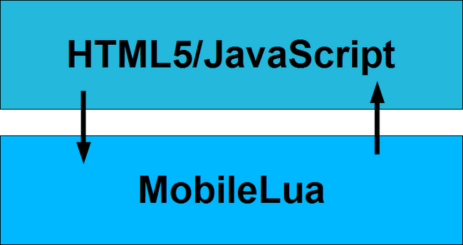
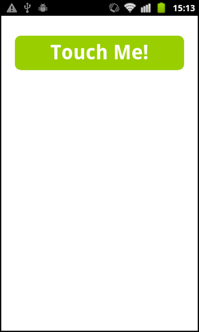

Build an app with JavaScript and Lua - Dynamic language interplay
MobileLua is a port of the Lua programming language to MoSync. MobileLua provides access to the MoSync syscalls API, and also has high-level libraries for tasks like networking, file access, and native UI widgets. You can do almost everything in Lua you can do in C, and you can build fully featured stand-alone apps, indistinguishable from a MoSync C/C++ app.
Note: This blog post has been updated March 1, 2012, to reflect the latest version of MobileLua for MoSync 3.0 available on GitHub.
Using a WebView in Lua
Since MobileLua supports native UI and WebView widgets, this opens up for using Lua with HTML5/JavaScript, including sending messages between JavaScript and Lua, just as with JavaScript and C++. Lua is then used as the host language for the WebView containing HTML and JavaScript, as shown in this diagram:

Calling Lua from JavaScript
Now it is time to put on our wizard hat. Lua, like JavaScript, is a dynamic language, which means that we can evaluate code on-the-fly. This makes it possible to evaluate Lua from JavaScript by sending messages with Lua scripts to the underlying Lua application hosting the WebView.
Here is a video that demonstrates the JavaScript/Lua bridge:
(Click here if you cannot see the embedded video.)
On the current platforms where MoSync supports the WebView widget (Android, iOS, Windows Phone), we can send a message from JavaScript to C (and thus also to Lua) by using the mosynd.bridge.sendRaw JavaScript function.
This opens up for the possibility to evaluate Lua code from JavaScript. In this example the Lua function "OnTouch()" is called from JavaScript:
mosync.bridge.sendRaw("OnTouch()")
If we, for example, want the device to vibrate, we can call the maVibrate syscall directly from JavaScript:
mosync.bridge.sendRaw("maVibrate(500)")
Unlike the C++ communication bridge, we don't have to parse and handle each message explicitly. We can just call any Lua script. The entire Lua language and all the MoSync syscalls are suddenly available to mobile developers using JavaScript (thanks to the wizard hat!).
Next we will examine a very simple program implemented in Lua and JavaScript. Here is a screenshot of the app:

When the "Touch Me!" button is touched, the device vibrates.
Here is an HTML code snippet that makes the device vibrate on a touch start event:
One nice thing with Lua is that it supports multi-line strings. This makes it very easy to embed HTML and JavaScript right in the Lua source code (yes, this can be messy if abused ;) )
Calling JavaScript from Lua
LuaCountDown is an example program that shows how to build an app that implements the program logic in Lua. The source code is available here: LuaCountDown.lua (don't use global variables at home ;) )
For this example, the logic could have been implemented in JavaScript as well, but the program is a nice demonstration of how Lua and JavaScript can interplay in an app.
Here is a screenshot of the app, it displays a new count-down item whenever the "Touch Me!" button is touched:
Lua is a fun language to use, and has many of similarities to JavaScript. It is a clean and minimalistic language, and is by some considered to be like JavaScript without the bad parts. ;)
MobileLua is an open-source project, and is implemented completely in MoSync C/C++ (contains no platform specific native code). It runs on all platforms supported by MoSync. Native UI features like the WebView widget are not available on all platforms, but MobileLua is not depending on native UI, it can use MoSync syscalls to render directly to the screen surface.
The MobileLua project shows the power of the MoSync C/C++ platform - it is possible to run a dynamic language on top of MoSync with good performance. Given the popularity of Lua with games and the MoSync indie licence for mobile developers, MobileLua is worth checking out for both game developers and mobile app developers.
Lua offers great flexibility. You can implement the whole app in Lua without writing any C/C++ code at all. Or you can implement parts of the app in C/C++, and make your own bindings from Lua to C/C++, or use Lua as an embedded scripting engine for your app.
For HTML5 applications, mobile Lua offers a nice interplay with JavaScript, making it easy to access MoSync platform services from JavaScript. Visit the MobileLua wiki to get started, and participate in the MoSync forum for Lua. Mobile developers can finally build an app and access the wonderful world of dynamic languages!